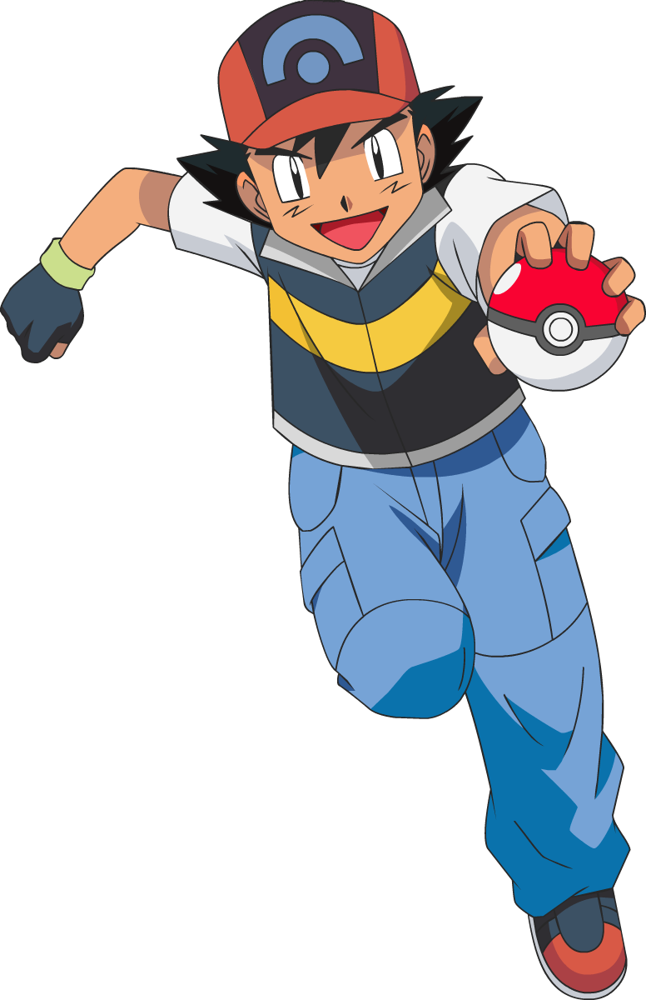

Core purpose
Pokeballs let trainers catch wild Pokemon, transport partners safely, and organize a team for battles, travel, healing, and training.
Trainer academy
Learn what Pokeballs do, when each special ball works best, and how smart trainers choose the right capture tool for the moment.

How catching works
A Pokeball is a trainer's main capture and storage device. In Pokemon stories, it safely holds a Pokemon in a compact state and can release it again whenever the trainer sends it out.
Pokeballs let trainers catch wild Pokemon, transport partners safely, and organize a team for battles, travel, healing, and training.
Most games calculate capture using the Pokemon's species catch rate, remaining HP, status condition, ball bonus, and other special rules.
The best ball is not always the most expensive one. Location, Pokemon type, battle length, time of day, and evolution method can all matter.
Ball catalog
The classic red-and-white ball. It is cheap, common, and best for early routes or low-level Pokemon.
A stronger everyday ball than the Poke Ball. It is useful once wild Pokemon become harder to catch.
A powerful general-purpose option. Trainers often rely on it for rare Pokemon when no special ball fits better.
A legendary ball with a guaranteed capture in most main games. Save it for a roaming, shiny, or very important Pokemon.
Works best at the very start of a wild battle. Throw it on turn one for the biggest benefit.
Gets better as a battle lasts longer. It is excellent for tough legendary encounters after many turns.
Great for Pokemon found while surfing, fishing, or underwater depending on the game.
Strong in caves and at night. It is one of the best choices for dark areas and late-night hunts.
Specialized for Water-type and Bug-type Pokemon. Perfect for ponds, oceans, forests, and bug-catching routes.
Works better on Pokemon species already registered in the Pokedex. Handy for breeding, forms, and nature hunting.
More effective when your active Pokemon is much higher level than the wild Pokemon.
Designed for Pokemon families connected to Moon Stones. It is also loved by collectors for its beautiful design.
Makes friendship grow faster after capture. Use it for Pokemon that evolve through friendship.
Starts the captured Pokemon with higher friendship. It is excellent for friendship evolutions and cozy team themes.
Restores the captured Pokemon's HP and status after capture. Useful during long trips away from a Pokemon Center.
A white commemorative ball with normal catching strength. Many trainers use it for style, rarity, or matching colors.
Capture strategy
Weaken the Pokemon without knocking it out. False Swipe is famous because it leaves the target with at least 1 HP.
Sleep and paralysis are especially useful because they make capture easier and can reduce the target's ability to fight back.
Use Quick Ball early, Dusk Ball at night or in caves, Net Ball on Water and Bug types, and Timer Ball in long battles.
Bring extra balls, healing items, status moves, and a Pokemon that can survive long enough to keep the capture attempt steady.
Pokemon with abilities such as Static, Magnet Pull, or Flash Fire can make certain wild Pokemon easier to find before you start catching.
Before legendary, shiny, or one-time encounters, save first so a knockout, escape, or empty bag does not end the chance forever.
Special knowledge
Johto is famous for Apricorn-based balls such as Fast Ball, Heavy Ball, Level Ball, Love Ball, Lure Ball, Friend Ball, and Moon Ball.
Some trainers choose balls for color themes, animation effects, or personality. A Premier Ball team feels different from a Dusk Ball team.
Exact bonuses and availability vary by game, so always check the rules for the specific Pokemon title you are playing.
In many newer games, breeding can pass down the captured Pokemon's ball, so collectors often plan the ball before catching.
Naming boxes by purpose, region, type, or ball style makes it much easier to find rare catches and build themed teams later.
Master Balls, Apricorn Balls, Beast Balls, and event balls can be limited, so think carefully before using them on common encounters.
Quick pick guide
Try a Quick Ball immediately. It is built for fast attempts before the Pokemon has been weakened.
Use a Dusk Ball when the setting is dark. It is one of the easiest upgrades to remember.
Use Timer Balls after the battle drags on, especially once HP is low and status is already applied.
Use Luxury Ball or Friend Ball when the Pokemon evolves through friendship or you want a softer team theme.